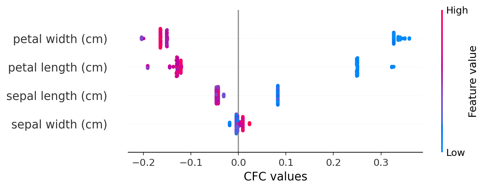
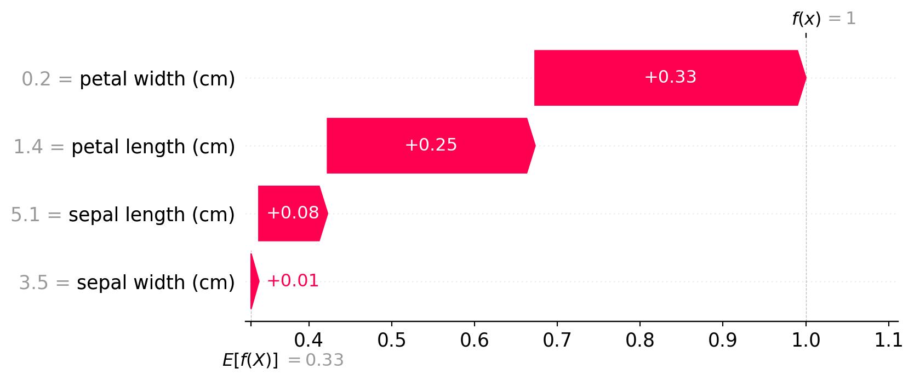
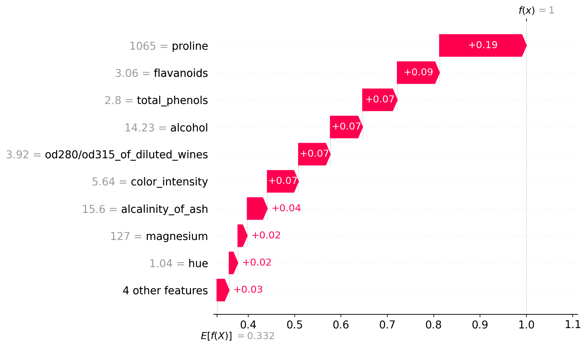
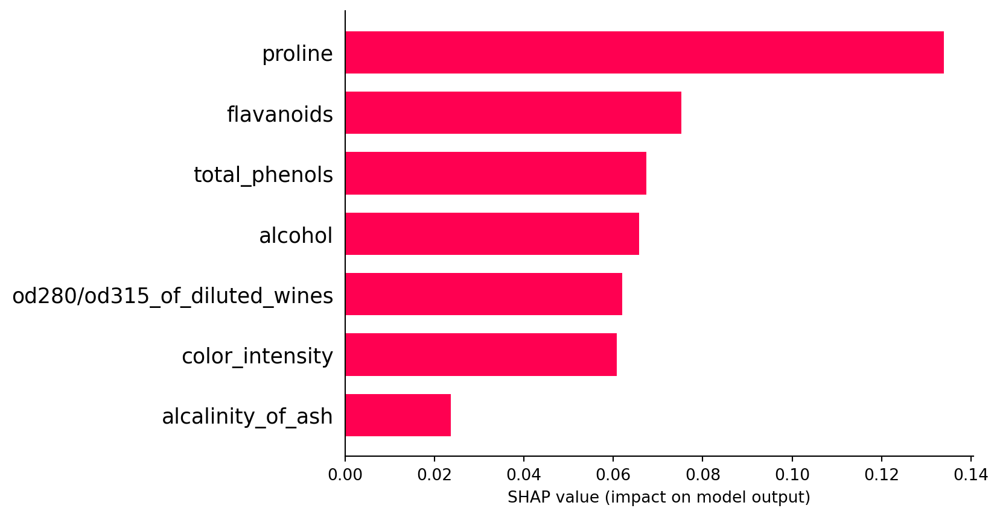

#!pip install shap treeinterpreter2 SHAP Plots with treeinterpreter
In this notebook, we’ll demonstrate how to create SHAP-type plots using the treeinterpreter package along with SHAP. SHAP (SHapley Additive exPlanations) plots are a popular method for interpreting machine learning models by showing the contribution of each feature to a specific prediction. treeinterpreter is a tool that breaks down the predictions of tree-based models (e.g., Random Forests) into individual feature contributions. By combining these two tools, we can visualize and interpret the impact of features on model predictions.
Prerequisites
Before running the examples, ensure that you have the following libraries installed: - shap - treeinterpreter - scikit-learn
You can install them using:
pip install shap treeinterpreter scikit-learnTable of Contents
import shap
import numpy as np
import matplotlib.pyplot as plt
from sklearn.datasets import load_wine
from sklearn.datasets import load_iris
from treeinterpreter import treeinterpreter as ti
from sklearn.ensemble import RandomForestClassifierExample 1: Iris Dataset
This script loads the Iris dataset, trains a RandomForestClassifier model, and uses TreeInterpreter and SHAP to analyze feature contributions.
Steps:
- Load the Iris dataset and train a RandomForestClassifier model.
- Use TreeInterpreter to obtain predictions, biases, and feature contributions.
- Focus on contributions for one class (class 0 in this example).
- Create a SHAP Explanation object.
- Generate various SHAP plots including a summary plot, a waterfall plot for the first instance, and a bar plot of the mean absolute SHAP values across all features.
import numpy as np
import shap
from sklearn.datasets import load_iris
from sklearn.ensemble import RandomForestClassifier
from treeinterpreter import treeinterpreter as ti
import matplotlib.pyplot as plt
# Load dataset and train the model
data = load_iris()
X, y = data.data, data.target
model = RandomForestClassifier()
model.fit(X, y)
# Use treeinterpreter to get the prediction, bias, and contributions
prediction, bias, contributions = ti.predict(model, X)
# Contributions.shape is (n_samples, n_features, n_classes)
# We reduce the dimensionality by selecting one class
shap_values = contributions[:, :, 0] # Choose class 0 for visualization
# Creating a SHAP Explanation object
explainer = shap.Explainer(model)
shap_object = shap.Explanation(
values=shap_values,
base_values=bias[:, 0], # Base values should match the selected class
data=X,
feature_names=data.feature_names
)
# Generate SHAP summary plot (beeswarm plot) and modify the x-axis label directly
shap.summary_plot(shap_object.values, shap_object.data, feature_names=shap_object.feature_names, show=False)
plt.gca().set_xlabel("CFC values") # Modify the x-axis label
plt.show() # Display the plot with the updated label
Generate SHAP waterfall plot for the first instance
shap.waterfall_plot(shap_object[0])
For global importances, average the mean absolute values across all instances
mean_abs_shap_values = np.abs(shap_object.values).mean(axis=0)
shap.bar_plot(mean_abs_shap_values, feature_names=shap_object.feature_names)
Example 2: Wine Dataset
This script demonstrates the process of loading the Wine dataset, training a RandomForestClassifier model, and using TreeInterpreter and SHAP to analyze feature contributions. It includes generating several SHAP plots for visualizing the contributions.
Steps:
- Load the Wine dataset and train a RandomForestClassifier model.
- Use TreeInterpreter to obtain predictions, biases, and feature contributions.
- Focus on contributions for one class (class 0 in this example).
- Create a SHAP Explanation object.
- Generate SHAP plots including a summary plot, a waterfall plot for the first instance, and a bar plot showing the mean absolute SHAP values across all features.
import numpy as np
import shap
from sklearn.datasets import load_wine
from sklearn.ensemble import RandomForestClassifier
from treeinterpreter import treeinterpreter as ti
import matplotlib.pyplot as plt
# Load the Wine dataset and train the model
data = load_wine()
X, y = data.data, data.target
model = RandomForestClassifier()
model.fit(X, y)
# Use treeinterpreter to get the prediction, bias, and contributions
prediction, bias, contributions = ti.predict(model, X)
# contributions.shape is (n_samples, n_features, n_classes)
# We reduce the dimensionality by selecting one class
shap_values = contributions[:, :, 0] # Choose class 0 for visualization
# Creating a SHAP Explanation object
explainer = shap.Explainer(model)
shap_object = shap.Explanation(
values=shap_values,
base_values=bias[:, 0], # Base values should match the selected class
data=X,
feature_names=data.feature_names
)
# Generate SHAP summary plot (beeswarm plot) and modify the x-axis label directly
shap.summary_plot(shap_object.values, shap_object.data, feature_names=shap_object.feature_names, show=False)
plt.gca().set_xlabel("CFC values") # Modify the x-axis label
plt.show() # Display the plot with the updated label
Generate SHAP waterfall plot for the first instance
shap.waterfall_plot(shap_object[0])
For global importances, average the mean absolute values across all instances
mean_abs_shap_values = np.abs(shap_object.values).mean(axis=0)
shap.bar_plot(mean_abs_shap_values, feature_names=shap_object.feature_names)
References